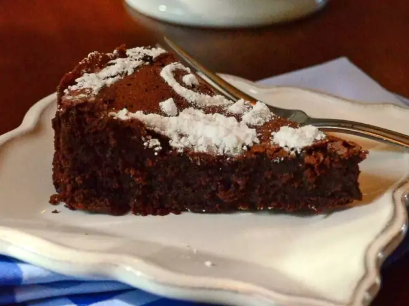

Photo by Valerie Brunmeier from allrecipes.com
Description
This is a typical French homemade cake — dense, dark, and delicious. It is a European sponge cake, with a different texture than its American counterparts. It is excellent when served with lightly sweetened whipped cream.
I have adapted the recipe Michelle Chen has submitted to the website all recipes.com to my personal taste.
Ingredients
½ cup cane sugar
10 (1 ounce) squares semi-sweet chocolate
¾ cup salted butter, cubed
2 teaspoons vanilla extract
4 eggs
¼ cup white flour
Steps
Preheat the oven to 325 degrees F (165 degrees C). Generously grease a 9-inch springform cake tin.
Set aside 3 tablespoons of sugar. Place chocolate, butter, and remaining sugar in a large, heavy-based pan. Cook over moderate heat until chocolate and butter have melted, and sugar has dissolved. Remove the pan from heat. Stir in vanilla, and leave mixture to cool slightly
Beat egg yolks into chocolate mixture one at a time, beating well after each addition. Stir in flour.
In a large bowl, beat egg whites until foamy. Beat to stiff peaks. Sprinkle reserved sugar over egg whites, and beat until stiff and glossy. Use a whisk or spatula to fold 1/3 of egg whites into chocolate mixture, then carefully fold in remaining whites. Carefully pour batter into the prepared tin, and tap the tin gently to release air bubbles.
Bake until well risen and a skewer inserted into center of the cake comes out clean, for about 45 minutes to 1 hour. Check cake after 30 minutes; if cake appears to rise unevenly, rotate after 30 to 35 minutes. If cake starts to crack or become too brown, place a piece of foil lightly over top. Transfer cake to a wire cooling rack, and remove the sides of the springform tin. Cool completely, and then remove the base. Do not attempt to remove cake before it's completely cooled as this cake is very fragile.